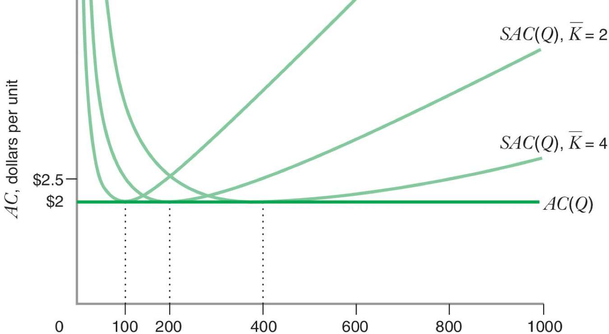
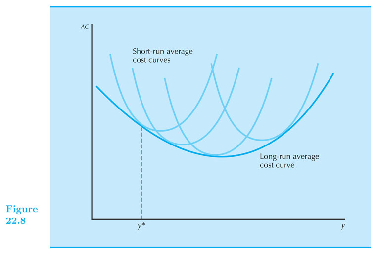

Cost Curves
Intermediate Microeconomics (Econ 100A)
Kristian López Vargas
UCSC - Spring 2017
Cost Curves - Average Costs
-
Total cost: $ c(q) = c_v(q) + F $
-
Average Cost: $ AC(q) = \frac{c(q)}{q} = \frac{c_v(q)}{q} + \frac{F}{q} $
-
That is: $ AC(q) = AVC(q) + AFC(q) $
-
Notice FC does not depend on $ q $, but AFC does depend on $ q $.
-
Can AFC increase in $ q $
Average Costs

Marginal Cost
-
Marginal cost is the change in cost due to change in output
-
$ c’(q) = \frac{ ∂c(q) }{ ∂q } = \frac{ ∂c_v(q) }{ ∂q } $
The geometry of total cost, AC, AVC and MC
-
MC: is the slope of a tangent line of c(q) at q level.
-
AC: is the slope of the ray from the origin to c(q) at q level.
-
See document camera side
-
https://www.econgraphs.org/graphs/micro/producer_theory/cost_curves
Some relations of Cost Curves
-
Marginal cost equals AVC at zero units of output
- Because AVC starts at the origin.
-
MC: crosses at minimum points of AC and AVC.
- MC < AC when AC is decreasing and MC > AC when AC is increasing.
Cost Curves
Cost Curves - Example:
-
$ c(q) = 1 + q^2 $
-
$ c_v(q) = ? $
-
$ FC(q) = ? $
-
$ AVC(q) = ? $
-
$ AFC(q) = ? $
-
$ AC(q) = ? $
-
$ MC(q) = ? $
Cost Curves - Example:
Cost Curves - do-at-home examples:
-
$ c(q) = 10 - 0.5(q-2)^2 + (q-2)^3 $
-
Try with all kinds of functions...
Cost minimization in two plants
-
Possibly two technologies, therefore two cost functions $ c_1(q_1) \text{ and } c_2(q_2) $
-
Graphical approach
- Use a production-requirement "box"
-
Mathematical approach
-
$ \text{minimize} (C = c_1(q_1) + c_2(q_2)) $ subject to: $ q_1 + q_2 = q $
-
replace $ q_2 $ by $ q-q_1 $ and solve $ dC/dq_1 = 0$
-
Solution: $ q_1 \text{ and } q_2 $ such that $ MC_1(q_1) = MC_2(q_2) $
-
Long-run and short-run cost function - Example.
-
$ q = 50 L^{0.5} K^{0.5} $
-
Find long run cost function:
-
Total Cost (TC): $ c(w,r,q) = (q/25)(wr)^{0.5} $
-
$ AC(w,r,q) = (1/25)(wr)^{0.5} $
-
$ MC(w,r,q) = (1/25)(wr)^{0.5} $
-
Long-run and short-run cost function - Example.
-
$ q = 50 L^{0.5} K^{0.5} $
-
Find short-run cost function ($ K = \bar{K} $):
-
$ L^{SR} = \frac{ q^2 }{ 50^2 \bar{K} } $
-
$ c^{SR}(w,r,q) = w \frac{ q^2 }{ 50^2 \bar{K} } + r \bar{K} $
-
$ {AC}^{SR}(w,r,q) = w \frac{ q }{ 50^2 \bar{K} } + r \frac { \bar{K} }{ q } $
-
$ {MC}^{SR}(w,r,q) = 2 w \frac{ q }{ 50^2 \bar{K} } $
-
If for example w = 25 and r = 100:

Short-run AC (SAC) and long-run AC (SAC)
- Cost curves coincide if fixed level of capital is also LR solution.
Short-run AC (SAC) and long-run AC (SAC)
- More generally: LR cost curves envelope from below the SR ones.
